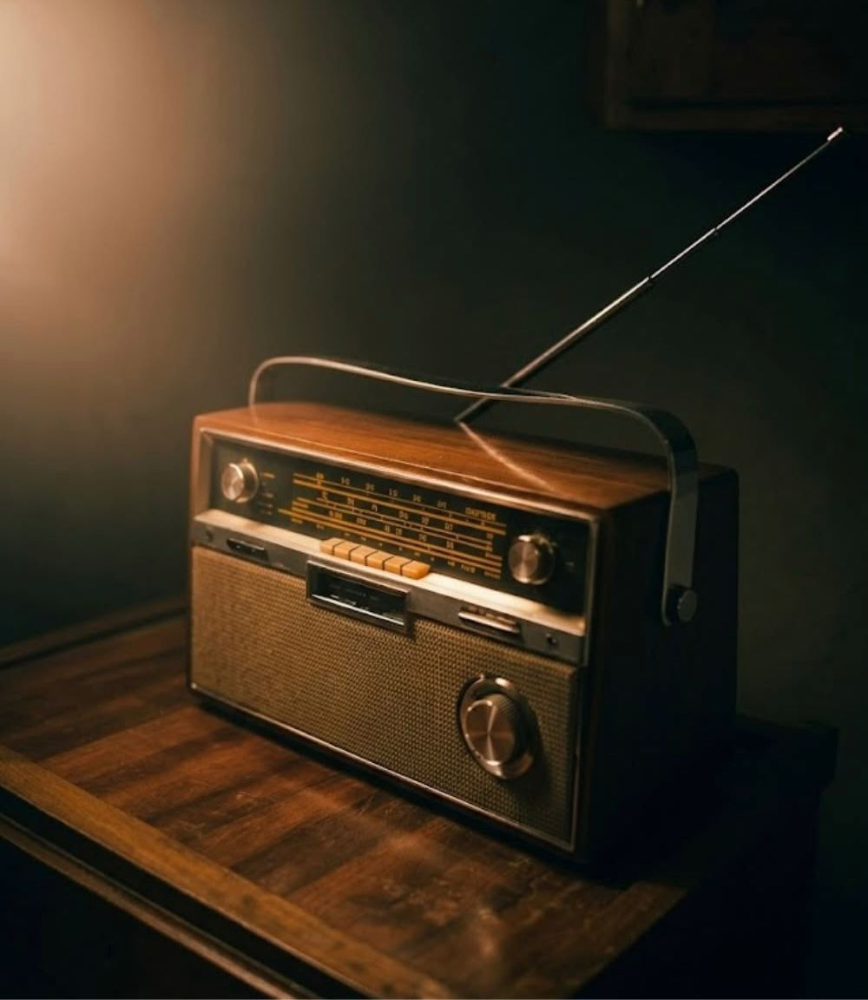
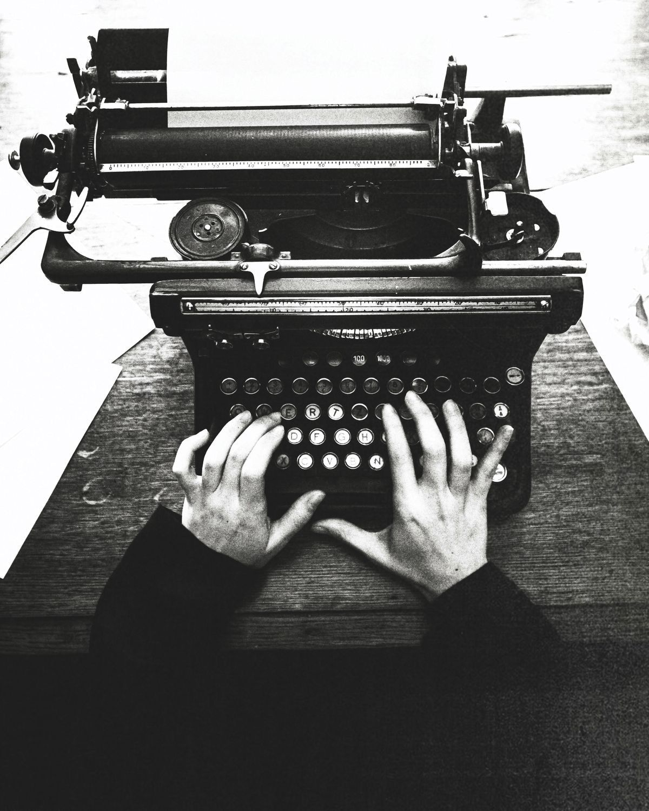
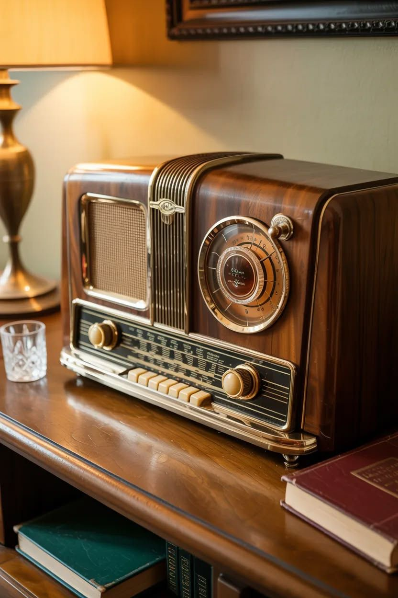
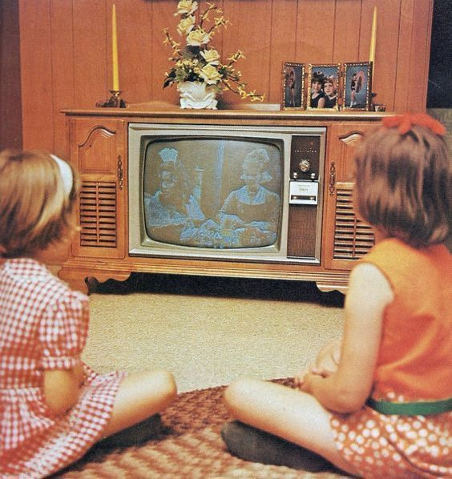
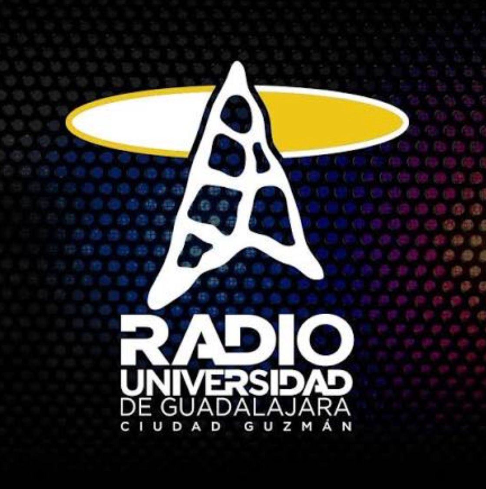
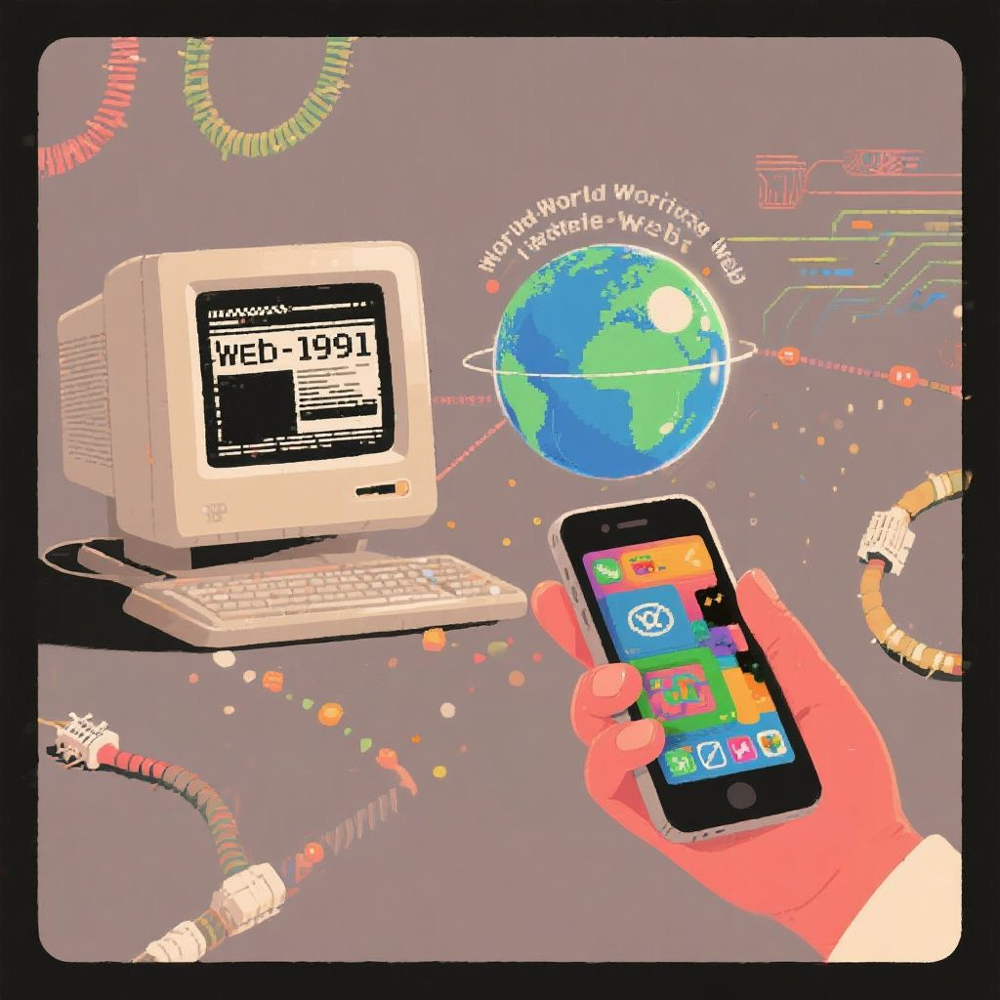
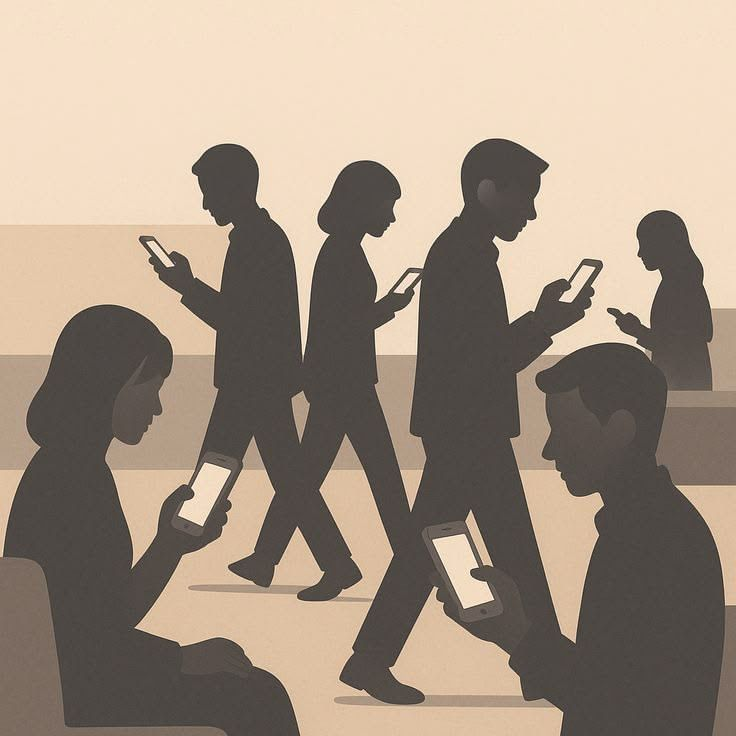

Los medios de comunicación han desempeñado un papel fundamental en el desarrollo social y cultural de Ciudad Guzmán. Desde los primeros periódicos impresos hasta las plataformas digitales actuales, la manera de informar y conectar a las personas ha evolucionado constantemente.
La evolución de los medios de comunicación en Ciudad Guzmán.
La prensa regional ha sido una herramienta fundamental para preservar la memoria histórica de Ciudad Guzmán. A través de periódicos y publicaciones locales, se han documentado acontecimientos importantes, tradiciones, actividades culturales y cambios sociales que forman parte de la identidad de la comunidad.
Radio UdeG se ha convertido en uno de los medios más representativos de la región sur de Jalisco gracias a su labor educativa, cultural y social. Además de informar, promueve la participación ciudadana y la difusión de temas de interés para la comunidad universitaria y la población en general.
Los medios digitales han transformado la forma en que los habitantes de Ciudad Guzmán acceden a la información. Su rapidez, accesibilidad e interacción permiten conocer noticias y acontecimientos en tiempo real, fortaleciendo la comunicación entre instituciones, empresas y ciudadanos.
Un recorrido visual por la evolución de los medios de comunicación.





